2025.03 — 2025.09研究助理
香港中文大学（深圳）
黄建华、王本友教授课题组
- 开发 AI 智慧校园图灵测试小程序，为已录用会议论文提供 200+ 用户数据。
- 参与 AI 标准化病人研究：12 名医学生访谈、3 场共创工作坊，分析并提炼 6 类需求与 6 项设计要求。
2025 年 9 月起，转入人工智能 MPhil 阶段继续研究。
HCI × AI × GAMES
朱果 / Guo Zhu
研究人的体验，
构建可用、可玩的交互。
香港中文大学（深圳）人工智能 MPhil 在读。
从用户研究到 AI，再到 Unity，让想法成为可以体验的作品。
寻找游戏 AI / Agent · AI 应用开发方向实习
 HELLO, WORLD.
HELLO, WORLD.01 / ABOUT ME
我关注人如何理解和使用技术，也喜欢探索游戏里的机制与反馈。研究中，我参与用户访谈、共创设计、语音模型评测与生成；开发中，我用 Unity、Quest 3 和 Python 把问题变成可交互的原型。
希望把对人的理解、AI 的能力和游戏的可玩性连接起来。目前寻找游戏 AI / Agent 开发及 AI 应用方向实习，日常实习优先，近期可入职。
02 / EXPERIENCE
在真实的问题里，学习、搭建、迭代。
黄建华、王本友教授课题组
2025 年 9 月起，转入人工智能 MPhil 阶段继续研究。
游戏设计实习生 · 吉隆坡
03 / RESEARCH PAPERS
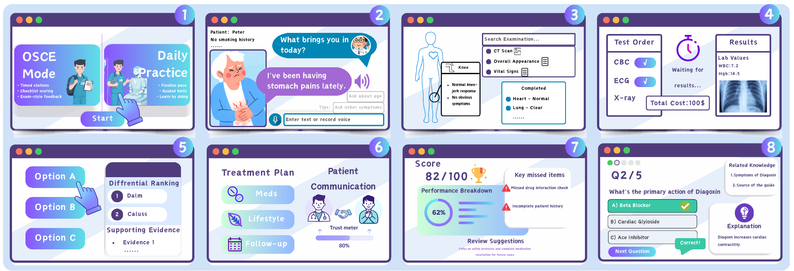
"It Talks Like a Patient, But Feels Different": Co-Designing AI Standardized Patients with Medical Learners
通过 12 名医学生访谈与 3 场共创工作坊，提炼 6 类需求与 6 项设计要求，形成 AI 标准化病人的概念流程。
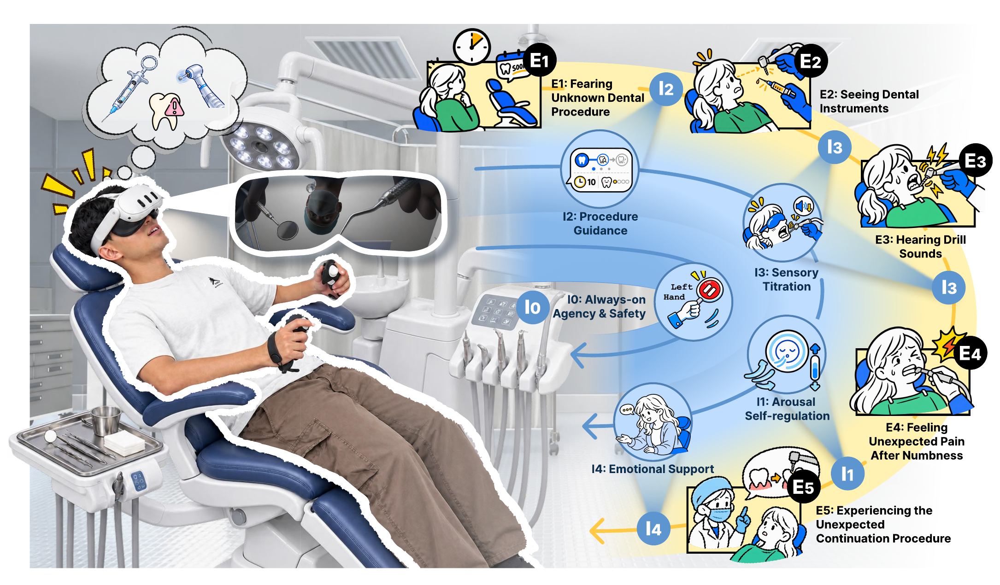
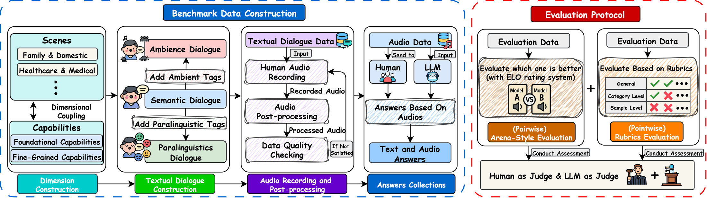
MTalk-Bench: Evaluating Speech-to-Speech Models in Multi-Turn Dialogues via Arena-style and Rubrics Protocols
结合 Arena 成对比较与 Rubrics 绝对评分，评估语义、副语言和环境音理解；参与真人录音、合成语音与环境音的制作筛选及模型评估。
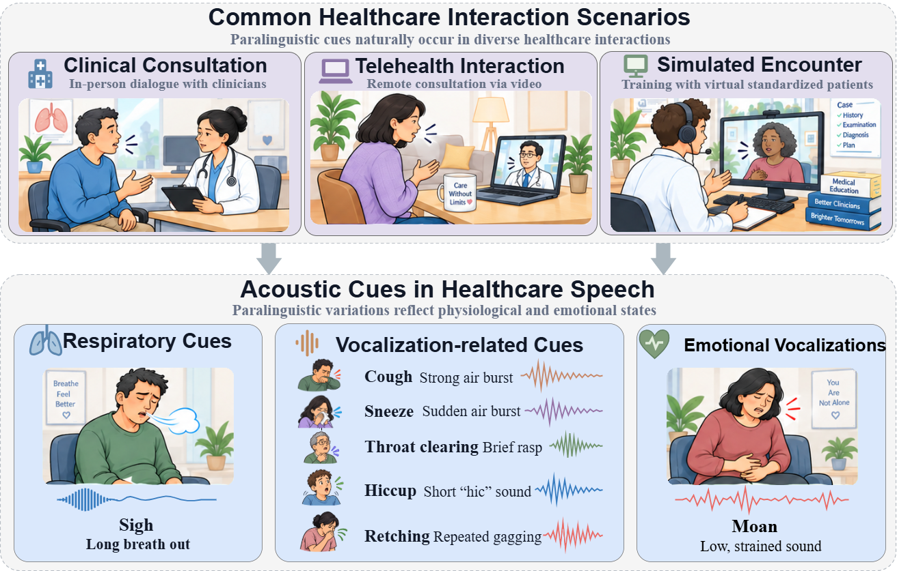
HealthTTS: Symptom-Aware Text-to-Speech with Clinical Acoustic Cues
根据文本、说话人参考和可选线索配置，直接合成包含咳嗽、清嗓等七类症状相关声学线索的完整语音。通过三阶段训练提升线索控制与自然度，并在虚拟标准化患者场景中开展评估。
04 / SELECTED PROJECTS
从研究问题，到可以体验的系统。
01 / HCI + VIRTUAL REALITY
探索如何用虚拟现实支持模拟牙科诊疗中的焦虑体验，让患者拥有更多理解与掌控。
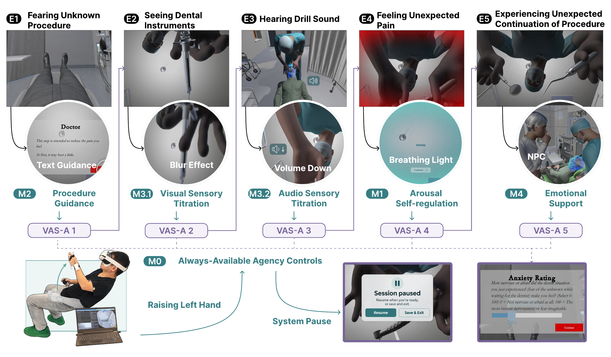
02 / HUMAN–AI INTERACTION
让参与者听一段对话，再判断对话中的声音来自人类还是 AI。将语音图灵测试研究转化为可参与的交互流程。
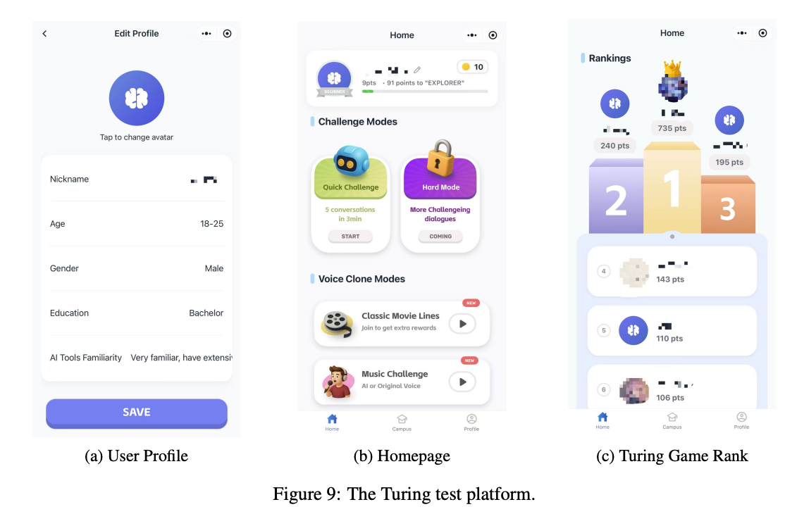
 DEMO / 12:00
DEMO / 12:0003 / GRADUATION PROJECT
第一人称心理恐怖解谜游戏。以五次走廊循环与无尽长廊结尾，通过空间细节、谜题与节奏变化逐步揭示故事。参考《寂静岭：PT》与《层层恐惧》，采用线性三幕叙事。
观看毕业设计 Demo使用 Unity Asset Store、Mixamo 等网络资产。
查看关卡流程与设计过程04 / GAME OFF 2024
围绕 Secret 主题，将 ESC 设置与游戏世界变化关联。玩家通过重试关卡发现线索，完成跨关卡逻辑解谜。
使用 Unity / C# 完成关卡白盒、交互逻辑与谜题流程，整合美术资源，完成打包与测试。
PLAY, ANIMATE & BUILD
从游戏与 AR，到动画、短片与三维场景。
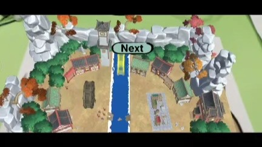
AR DEMO / 13:38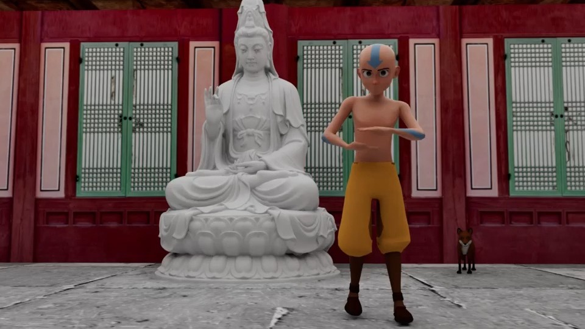
ANIMATION / 02:48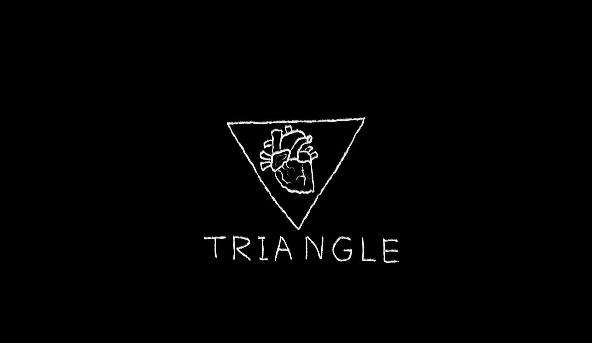
SHORT FILM / 19:11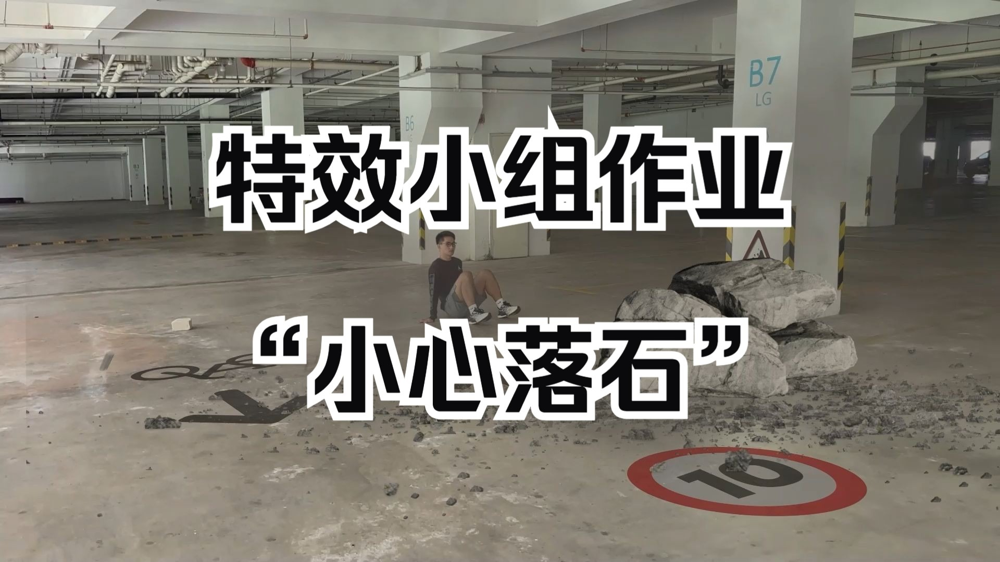
VFX FILM / 00:36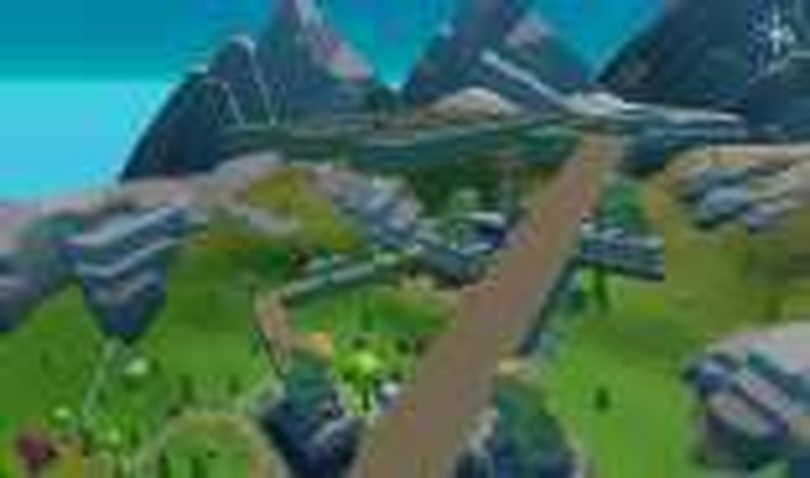
GAME DESIGN / P.08–09PLATFORM GAME
控制小球经历春夏秋冬四季，收集物品，寻找通往空中花园的钥匙。关卡包含传送门、浮木、移动船只、风场、旋转障碍与重生点。
使用网络资源搭建游戏。
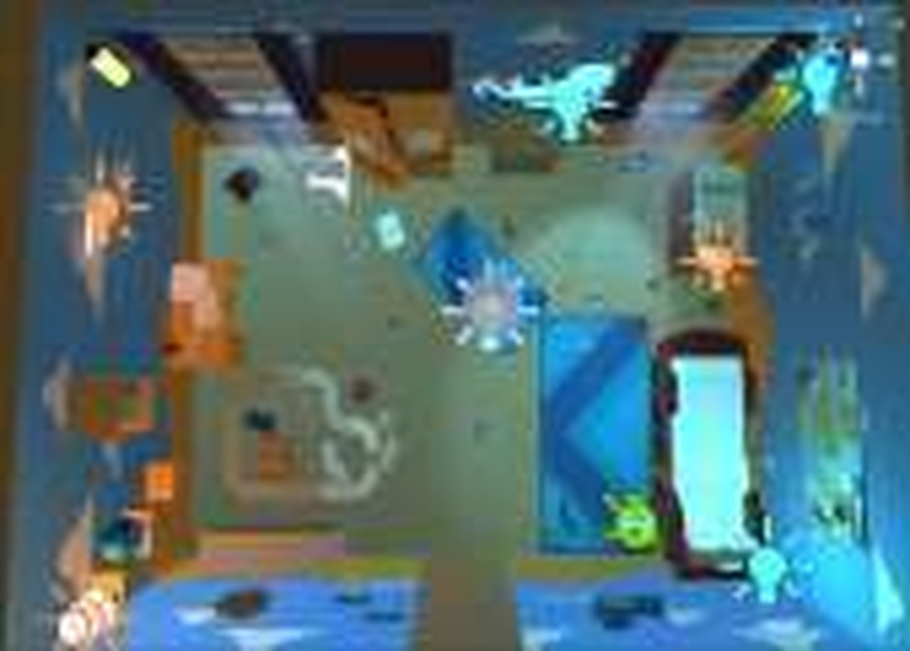
VR ADVENTURE / P.10–11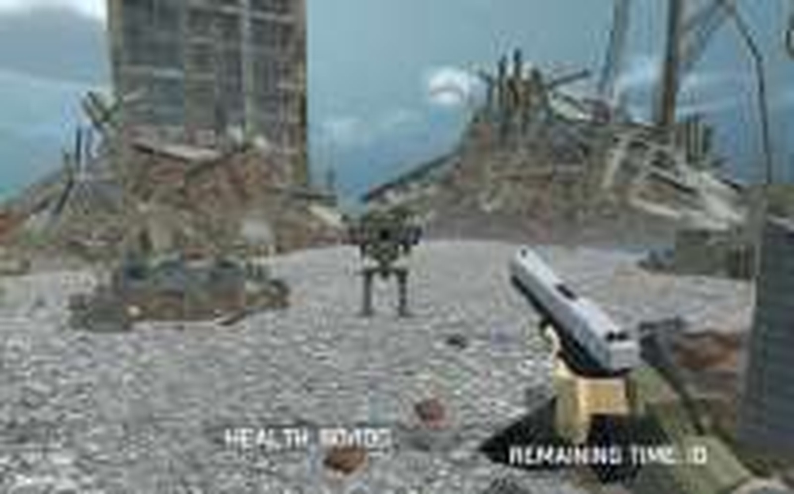
FPS GAME / P.12–13FIRST-PERSON SHOOTER
玩家在被遗忘的小岛上探索真相，在过去与现实间切换。通过射击战斗、枪械切换、激光躲避，以及密码、图像和文字谜题推进流程。
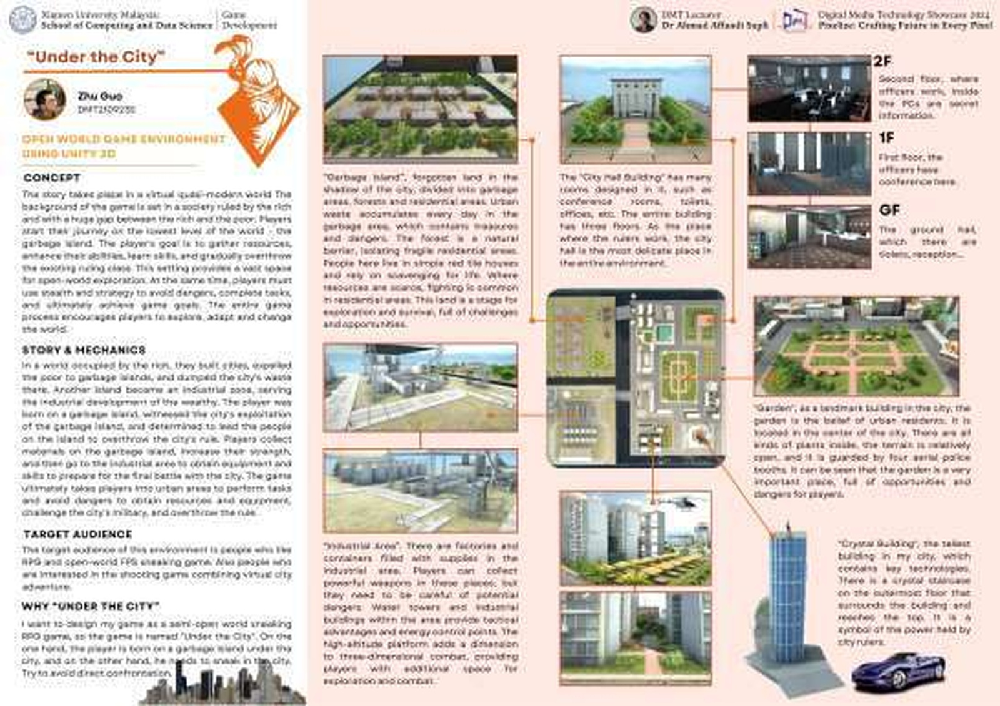
WORLD DESIGN / P.14WORLD & ENVIRONMENT DESIGN
围绕垃圾岛、工业区与城市之间的资源和阶层关系构建世界观，以区域差异组织空间、探索顺序与叙事背景。作品集展示环境设计与规划。
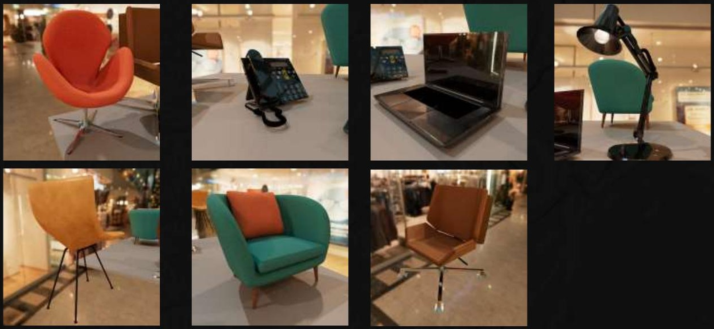
3D SCENE / P.20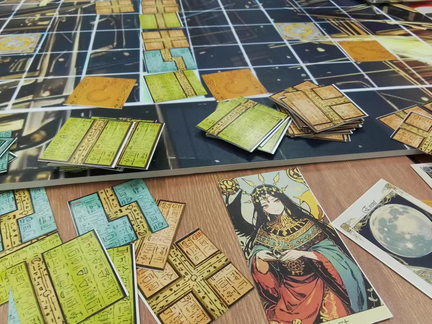
BOARD GAME / 4 + 1 PLAYERSCOOPERATIVE BOARD GAME
四位冒险家进入金字塔寻找宝藏，却意外触发自毁机制。必须在有限时间内协作解谜、击败守卫、收集钥匙，带着宝藏逃出生天。
由 4 名玩家与 1 名主持人参与，围绕合作策略与限时逃脱展开，包含实体棋盘、卡牌及《金字塔冒险手册》。
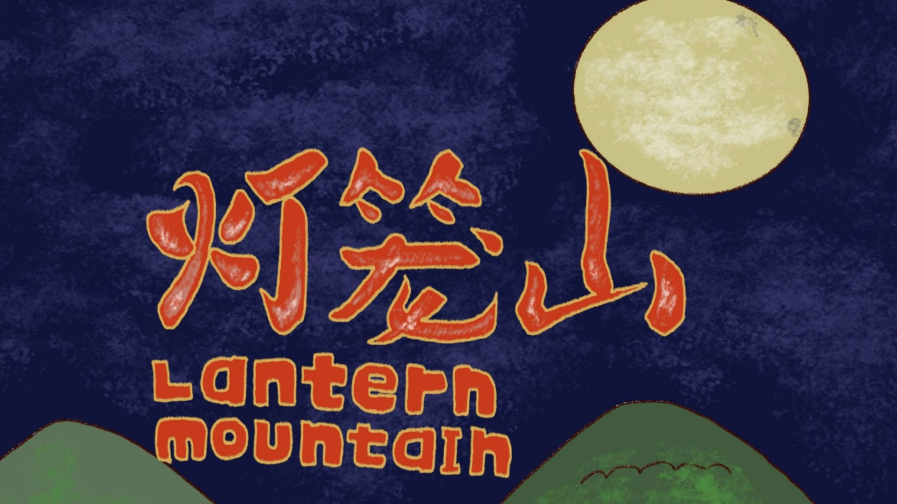
ANIMATION FILM / 02:19HAND-DRAWN ANIMATION
一对生活在山里的青梅竹马因梦想而分别，经历人生曲折后重聚于灯笼山。用手绘逐帧动画讲述梦想、离别与重逢。
使用 Adobe Animate 制作、Procreate 绘制，完成故事板、逐帧动画与上色。
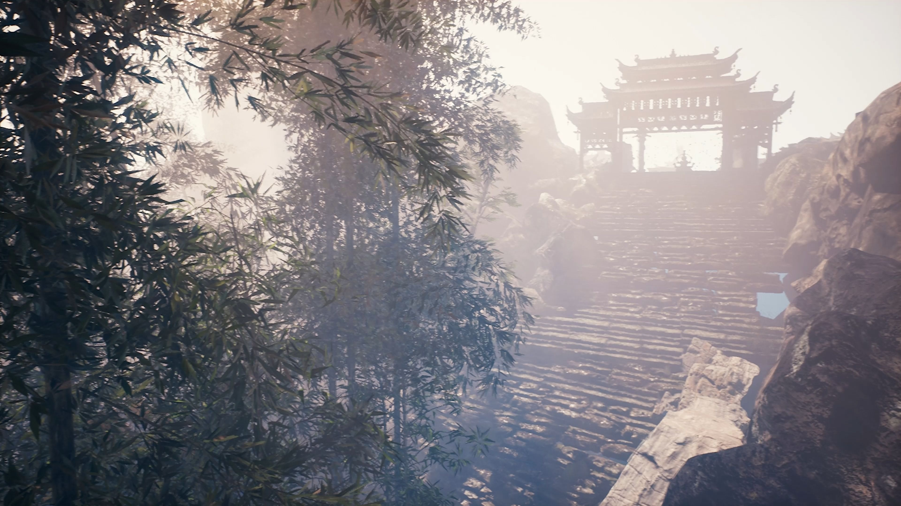
UNREAL ENGINE / 02:01ENVIRONMENT DESIGN
面向开放世界动作冒险游戏搭建部分环境，组合竹林、石阶与中式建筑，呈现山间场景的空间层次与氛围。
使用来自 Fab、Epic 商城等网络平台的模型与特效素材。
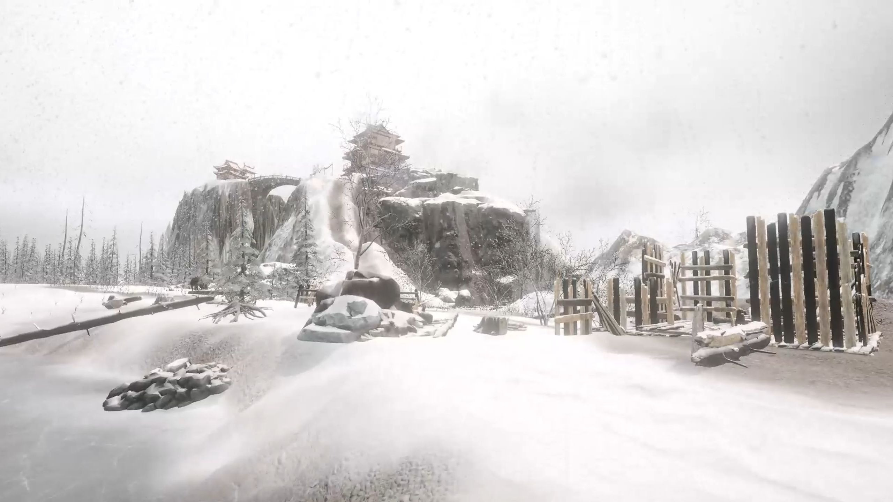
UNITY / 02:01ENVIRONMENT DESIGN
以老君山为环境参考，手工制作地形并布置场景资产，在雪山、建筑与山路之间构建环境空间。
模型与风雪等特效素材来自 Unity Asset Store 等网络资源。
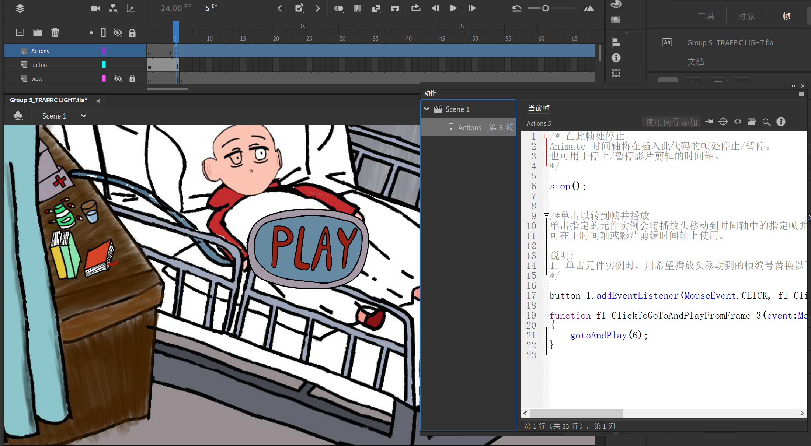
2D ANIMATION / P.17 INTERFACE DESIGN / P.21
INTERFACE DESIGN / P.21
INTERFACE PROTOTYPE
面向垃圾回收教育，设计页面与交互流程，帮助用户学习垃圾分类和回收。作品集展示页面设计、软件海报与原型。
翻阅完整作品集，了解设计过程与更多细节。
05 / EDUCATION
人工智能 · 哲学硕士 MPhil
在读，预计 2027 年 7 月毕业
GPA 3.61 / 4.0
研究方向：LLM / HCI、语音模型评测与生成。
数字媒体技术 · 工学学士
GPA 3.40 / 4.0 · 专业前 25%
年度奖学金（2022、2023）
全国大学生数学建模竞赛二等奖（2023）
MCM 荣誉奖（2023）
06 / TOOLKIT
Python / PyTorch / Transformers
微调 / RAG / Prompt
模型部署、评测与数据质检
Unity / C# / C / C++
Quest 3 / OpenCV
关卡设计与 VR 原型
用户访谈 / 参与式设计
用户研究 / 模型评测
英语技术交流与写作
07 / SAY HELLO
如果你也在探索 AI、交互与游戏，欢迎聊聊。